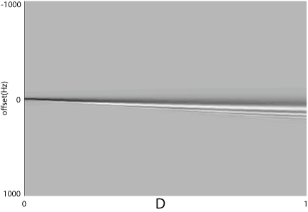

The effect of the Bulk susceptibility
|
This examples simply loops through a series of Bulk susceptibility parameters over a high magnetization (5 moles, Bo=11 Telsa) spin system to see the effect on the offset. As D increases, the offsets should 'chirp' more and more as they relax to equilibrium. The below figure is the data generated from the program, and displays the expected result.

|
#----------------------INput File-----------
#parameter file for looping through
# several BulkSus parameters
dim 1,1,1
min -0.5,-0.5,-0.5
max 0.5, 0.5, 0.5
#fid pieces
npts 1024
tf 2
#the pulse bits
pulseangle 90
pulsephase 270
pulseamp 80000
#basic spin parameters
Bo 11
temperature 300
offset 0
T2 0.1
T1 0.1
spintype 1H
moles 5
#the number of D's to loop through
#for the Bulk Suseptibility
D 0
Dstep 0.05
numD 20
#file output names for the data
fidout data
#----------------------end INput File-----------
#include "blochlib.h"
//the required 2 namespaces
using namespace BlochLib;
using namespace std;
timer stopwatch;
void printTime(int nrounds=1){
std::cout <<std::endl<< "Time taken: "
<< (stopwatch()/nrounds) << " seconds";
}
void Info(std::string mess)
{
cout<<mess<<endl;
cout.flush();
}
int main(int argc,char* argv[])
{
std::string fn;
//the parameter file
query_parameter(argc,argv,1, "Enter file to parse: ", fn);
Parameters pset(fn);
//get the basic parameters
int nsteps=pset.getParamI("npts");
double tf=pset.getParamD("tf");
double inTemp=pset.getParamD("temperature");
string spintype=pset.getParamS("spintype");
string detsp=spintype;
double t2s=pset.getParamD("T2");
double t1s=pset.getParamD("T1");
double moles=pset.getParamD("moles");
std::string fout=pset.getParamS("fidout");
coord<int> dims(pset.getParamCoordI("dim"));
coord<> mins(pset.getParamCoordD("min"));
coord<> maxs(pset.getParamCoordD("max"));
std::string dataou=pset.getParamS("trajectories", "", false);
// Grid Set up
typedef XYZfull TheShape;
typedef XYZshape<TheShape> TheGrid;
Info("Creating grid....");
Grid<UniformGrid> gg(mins, maxs, dims);
Info("Creating inital shape....");
TheShape tester;
Info("Creating total shape-grid....");
TheGrid jj( gg, tester);
//List BlochParameters
typedef ListBlochParams<
TheGrid,
BPoptions::Density | BPoptions::HighField,
double > MyPars;
int nsp=jj.size();
Info("Creating entire spin parameter list for "+itost(nsp)+" spins....");
MyPars mypars(nsp, "1H", jj);
nsp=mypars.size();
//The pulse list for a real pulse on protons..
Info("Creating real pulse lists...");
//get the info from the pset
double pang=pset.getParamD("pulseangle");
double amp=pset.getParamD("pulseamp");
double phase=pset.getParamD("pulsephase");
// (spin, amplitude, phase, offset)
Pulse PP1(spintype, amp*PI2, phase*DEG2RAD);
//get the Bo
double inBo=pset.getParamD("Bo");
Info("Setting spin parameter offsets....");
for(int j=0;j<nsp;j++){
mypars(j)=spintype;
mypars(j).moles(moles);
//set the proper Bo
mypars(j).Bo(inBo);
mypars.temperature(inTemp);
}
mypars.calcTotalMo();
mypars.print(cout);
PP1.print(cout);
//get the time for the 90 pulse
double tpulse=PP1.timeForAngle(pang*Pi/180., spintype);
//the time trains
Info("Initializing Time train for first Pulse....");
TimeTrain<UniformTimeEngine >
P1(UniformTimeEngine(0., tpulse, 10,100));
Info("Initializing Time train for FID....");
TimeTrain<UniformTimeEngine >
F1(UniformTimeEngine(tpulse, tpulse+tf, nsteps,20));
//Extra interactions
typedef Interactions<
Offset<>,
Relax<>,
BulkSus > MyInteractions;
Info("Setting Interactions....");
//the offsets
//get the first offset
double offset=pset.getParamD("offset")*PI2;
Offset<> myOffs(mypars, offset);
//Relaxation
Relax<> myRels(mypars, (!t2s)?0.0:1.0/t2s, (!t1s)?0.0:1.0/t1s);
//Bulk suseptibility
double D=pset.getParamD("D");
double Dstp=pset.getParamD("Dstep");
int nDs=pset.getParamI("numD");
BulkSus myBs(D);
//total interaction obect
MyInteractions MyInts(myOffs, myRels, myBs);
//typedefs for Bloch parameter sets
typedef Bloch< MyPars, Pulse, MyInteractions> PulseBloch;
typedef Bloch< MyPars, NoPulse, MyInteractions> NoPulseBloch;
//our data matrix
matrix FIDs(nDs, nsteps);
//loop over all our D values
for(int kk=0;kk<nDs;++kk){
//THis is the BLoch solve to perform a pulse
Info("Initializing total parameter list with a pulse....");
PulseBloch myparspulse(mypars, PP1, MyInts);
//This is the Bloch solver to Collect the FID (i.e. has no pusles...FASTER)
Info("Initializing total parameter list for FID collection....");
NoPulseBloch me;
me=(myparspulse);
Info("Integrating first Pulse....");
//out initial condition
Vector<coord<> > tm=me.currentMag();
stopwatch.reset();
BlochSolver<PulseBloch > drivP(myparspulse, tm, "out");
//integrate the Pulse
drivP.setWritePolicy(Hold);
if(!drivP.solve(P1)){
Info(" ERROR!!..could not integrate pulse P1....");
return -1;
}
//the fids initial condition is just the previous
// integrations last point
BlochSolver<NoPulseBloch > driv(me, drivP.lastPoint());
Info("Integrating FID ....");
//set various data collection policies
std::string lypname="lyps";
if(dataou!=""){
driv.setCollectionPolicy(All);
}else{
drivP.setCollectionPolicy(MagAndFID);
}
driv.setWritePolicy(Hold);
//set the detection spin
driv.setDetect(detsp);
//integrate the FID
if(driv.solve(F1)){
FIDs.putRow(kk, driv.FID());
}
//update the BulkSus interaction
myBs.D(myBs.D()+Dstp);
}
matstream matout(fout, ios::binary | ios::out);
matout.put("vdat", FIDs);
Vector<double> dlist(Spread<double>(D, (nDs*Dstp)+D, Dstp));
matout.put("ds", dlist);
matout.close();
printTime();
}
|
|